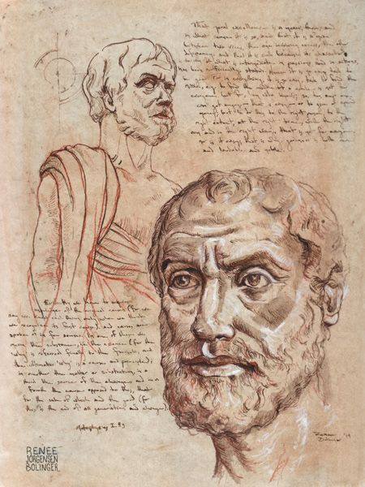

asignaturas
| Filosofia | Ecologia | TIC | Financieras |
|---|
FILOSOFIA
La filosofía es, según su etimología, el amor a la sabiduría (viene del griego filos: amor y sophia: sabiduría). Es el estudio de problemáticas diversas como son el conocimiento, la mente, la consciencia, la ética, el lenguaje, la belleza, la moral.